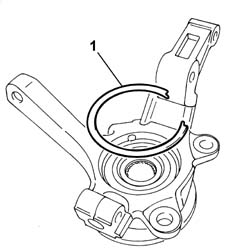
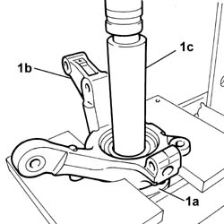
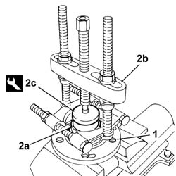
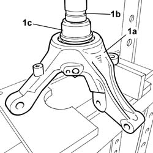
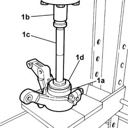
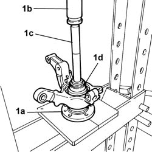

4450C34 BEARING OF ONE FRONT WHEEL HUB, L/H OR R/H - REPLACE WITH PILLAR REMOVED
- Path
- Procedures > 44 SUSPENSION AND WHEELS > 4450 HUBS AND WHEELS > 4450C FRONT WHEEL HUBS > 4450C34 BEARING OF ONE FRONT WHEEL HUB, L/H OR R/H - REPLACE WITH PILLAR REMOVED
- Kind
- repair procedure (removal / refitting; the operation number is the code)
- Applies to
- all engines; all production periods
- Interactive page
- https://sloeber94.github.io/elrnDB-fUlss/en/#/179007415
Applies to: all engines; all production periods
 Removing
Removing
 Refitting
Refitting1. Remove the circlip using a suitable tool.

Applies to: all engines; all production periods
- Position the steering knuckle/wheel hub assembly in the press, resting it on suitable plates so that it is flat.
1. Remove the front hub (1a) from the steering knuckle (1b) using the drift (1c) on the press.

Applies to: all engines; all production periods
1. Place the front wheel hub in the vice.
2. Remove the front hub bearing inner race (2a) using a USAG 472/3 or USAG 472A/3 type extractor (2b) or a similar tool fitted with a reaction element (2c).
 | Description | Code | Function |
|---|---|---|---|
2c | Mounting | 1.870.710.000 | Extracting wheel hub radial bearing race |

Applies to: all engines; all production periods
1. Remove the front hub from the steering knuckle (1a) using a press (1b) and tool (1c).
| Description | Code | Function |
|---|---|---|---|
1c | Extractor | 1.870.424.000 | Wheel hub bearing extraction |

Applies to: all engines; all production periods
Refitting
Removing1. Fit the front hub bearing (1a) in the steering knuckle, using a press (1b) and tools (1c) and (1d).
| Description | Code | Function |
|---|---|---|---|
1c | Grips | 1.870.007.000 | Front wheel hub bearing fitting |
| Description | Code | Function |
|---|---|---|---|
1d | Fitting tool | 1.874.542.000 | Front wheel hub bearing fitting |

Applies to: all engines; all production periods
1. Fit the front hub (1a) in the steering knuckle, using a press (1b) and tools (1c) and (1d).
| Description | Code | Function |
|---|---|---|---|
1c | Grips | 1.870.007.000 | Front wheel hub bearing fitting |
| Description | Code | Function |
|---|---|---|---|
1d | Fitting tool | 1.874.542.000 | Front wheel hub bearing fitting |

Applies to: all engines; all production periods
1. Place the circlip in position.